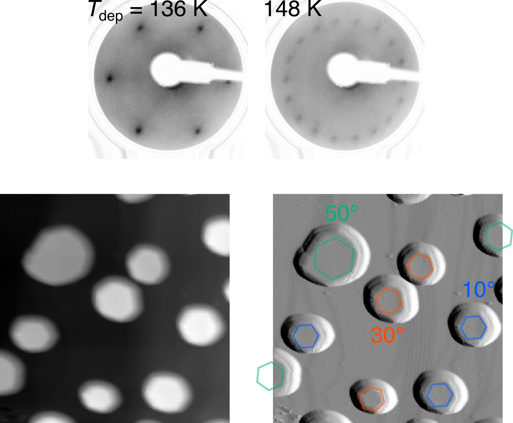

研究ポリシー
- 実験する：長い時間をかけて，系や装置とやりとりする過程を大事にしたいと思っています。
- 対象や方法を洗練させすぎない：内容を知って，自分でもやれるなと思わせる素朴な研究が好みであり，素人さを残した研究を心がけます。圧倒的な研究ではなく，波及効果のある研究が理想です。
- 感性を大切に：曖昧模糊とした感性を信頼こそしませんが，自然と向き合う姿勢として，根っこにある感性や美学を尊重したいと思っています。
現在の研究 (外部発表したものに限定)
- 表面上での氷の構造・物性
- 研究期間：2021/04 - 現在
- 現在の所属：東京大学 大学院総合文化研究科 先進科学研究機構 特任助教 (2026年10月1日着任)
東京大学生産技術研究所の着霜制御サイエンス社会連携研究部門で始めた氷の研究を， 現在は大学院総合文化研究科の 羽馬研究室で続けています。 生産技術研究所の福谷研究室とも， 協力研究員として連携しています。
Au(111)表面における氷の構造と配向
同じ表面に水を蒸着しても，成長させる温度によって，形成される氷の構造や面内配向は変わります。 Au(111)表面に成長させた氷を，低速電子線回折 (LEED)，昇温脱離分光 (TDS)， 原子間力顕微鏡 (AFM) を用いて調べました (東大新領域 杉本研究室との共同研究)。 低温での蒸着では二次元の二層六方晶氷が形成されますが， 蒸着温度を約144 Kより高くすると，この構造に特徴的な回折パターンは見られなくなりました。 また多層の氷では，136 Kでの蒸着で結晶の面内配向が一種類であるのに対し， 148 Kでは20度ずつずれた三種類となり，18個のスポットからなる回折パターンを示すことがわかりました。 145 Kで蒸着した試料のAFM観察でも，これに対応する三種類の面内配向をもつ氷結晶を確認しました。

一方，90 Kで作った非晶質の氷を155 Kまで加熱して結晶化させても， 今回調べた条件では，同じ18個の回折スポットは現れませんでした。 この結果は氷の面内配向が，成長時の温度や成長過程に依存することを示しています。 また，氷の基底面とAu(111)表面の原子配列の幾何学的な重なりを評価する単純なモデルでは， 観測された三種類の面内配向を再現できませんでした。 つまり両者の周期構造の相性だけでは，この配向の選択を説明できません。 表面のステップ (原子一層分の段差) など，局所的な環境が成長初期に作用し， 氷結晶の配向に関与している可能性があります。 こうしたミクロな界面構造とマクロな結晶配向を結びつける仕組みを明らかにすることが，今後の課題です。
H. Koshida*, K. Iwata, Y. Sugimoto, T. Hama, M. Wilde, and K. Fukutani, Temperature-dependent growth and orientation selection of ice on Au(111), J. Chem. Phys. 165, 051101 (2026). Link to the paper
アルミナ表面上の氷の構造と脱離キネティクス
単結晶表面に成長させたアルミナ表面に氷を成長させ，昇温脱離分光 (thermal desorption spectroscopy, TDS) で氷の構造と脱離キネティクスを調べました。 "complete analysis"とよばれる最も完全な解析法を氷にはじめて適用するために，独自の装置と解析方法を提案し，「真空中の水の排気遅れ」という問題を解消しました。 そのおかげで，脱離の活性化エネルギーとエントロピーを被覆率の関数として求めることが可能になりました。 二層目と一層目の脱離を比較し，アルミナ基板の影響をうけて，一層目の氷の構造が乱れていること，その配置エントロピーの効果によって，脱離が抑制されていることを示しました。 これまでの解析方法では，前指数因子 (エントロピー) は被覆率に依存しない仮定をした考察が一般的でしたが，水のように構造が「柔軟」なシステムにおいては，その仮定は成り立たず，エントロピー効果も脱離の動力学に重大な影響を与えうることを示唆します。
H. Koshida*, M. Wilde, and K. Fukutani, Coverage-Dependent Desorption Kinetics of Water on a Well-Ordered Alumina Thin Film Surface, J. Chem. Phys. 160, 034703 (2024). Link to the paper
過去の研究 (芽が出なかったものを含む)
- 金属表面上における一酸化窒素 (NO) の吸着・振動・電子状態
- 研究期間：2015 - 2021
NOはフロンティア軌道 (SOMO) に一つの不対電子をもつ常磁性分子であり，基底状態が二重項であるとても珍しい二原子分子です。金属表面への吸着は，NOx還元触媒反応との関連から，さかんに研究されていますが，我々は分子の不対電子 (SOMO) と金属表面との相互作用を研究するための，もっとも単純なプロトタイプとして，このシステムを調べました。
この研究の先駆者である，塩足様が中心となって書いたレビュー記事： A. Shiotari, H. Koshida, and H. Okuyama*, Adsorption and Valence Electronic States of Nitric Oxide on Metal Surfaces, Surf. Sci. Rep. 76, 100500 (2021). Link to the paper
Au(110)-(1x2)表面ではNOはその不対電子 (常磁性) を保持し，極低温では伝導電子と近藤一重項を形成すること， トンネル分光の共鳴ピークとNOの分子振動とがカップリングすることを示しました。またSTMマニピュレーションによって作製した準安定NOのSTSは，Efにディップ状の構造を示し，二重縮退したSOMO軌道の自由度に起因することを示しました (南谷 英美 教授との共同研究)。
H. Koshida, H. Okuyama*, S. Hatta, T. Aruga, and E. Minamitani, Effect of Local Geometry on Magnetic Property of Nitric Oxide on Au(110)−(1×2), Phys. Rev. B Condens. Matter 103, 155412 (2021). Link to the paper
80-100 KのCu(111)表面で，NOは三量体を自然発生的に形成することを，同位体ラベルした高分解能電子エネルギー損失分光 (EELS) を用いた振動分光法で明らかにしました。STMによる観測結果と合わせて，非常にユニークな三量体の形成を，実験で明確にしました。 のちに行われたDFT計算によっても，三量体の形成が支持され，表面電子系とSOMO，SOMO-SOMOの絶妙な混成とvdW相互作用，表面の構造，対称性が影響し，(NO)3が最安定になることが示されています。
H. Koshida, H. Okuyama*, S. Hatta, and T. Aruga, Vibrational Spectroscopic Evidence for (NO)3 Formation on Cu(111), J. Chem. Phys. 145, 054705 (2016). Link to the paper
さらに，(NO)3吸着Cu(111)表面に水を共吸着させると，(NO)3がこわれ，水とNOの複合体が形成されることをSTM, EELS，nc-AFMで示しました (東大新領域 杉本研究室との共同研究)。 気相では二つの分子はほぼ相互作用しませんが，表面に吸着し，水とNOとが静電相互作用することで，SOMOへの電子移動が促進した結果，安定なクラスタが形成されることを示しました。 NOの反結合性軌道であるSOMOへの電子移動は，N-Oの振動エネルギー，すなわち結合エネルギーを低下させることも，振動分光 (EELS) により明らかとなりました。 こうした水の効果は，NOの還元といった不均一系触媒反応において重要になりうると考えています。
H. Koshida, S. Hatta, H. Okuyama*, A. Shiotari, Y. Sugimoto, and T. Aruga, Water–NO Complex Formation and Chain Growth on Cu(111), J. Phys. Chem. C 122, 8894 (2018). Link to the paper
- 金属表面におけるπ共役系分子の構造とエネルギー準位
- 研究期間：2018 - 2020
π共役系分子のエネルギーレベルは、電子的性質を左右するため本質的です。 我々は銅フタロシアニン (CuPc) をAu(110)-(1x2)表面に蒸着し、そのフロンティア軌道レベルを走査トンネル分光で調べました。 その結果、分子の真下にある金原子の数 (2-6) が変わるだけで、伝導に寄与するLUMOのエネルギーレベルが系統的に、最大で200 meV程度シフトすることを明らかにしました。
H. Koshida, H. Okuyama*, S. Hatta, T. Aruga, Y. Hamamoto, I. Hamada, and Y. Morikawa, Identifying Atomic-Level Correlation between Geometric and Electronic Structure at a Metal–Organic Interface, J. Phys. Chem. C 124, 17696 (2020). Link to the paper
また、吸着に伴うさまざまな表面の再構成を可視化しました。有機分子が室温で吸着すると、金などの基板の表面構造は、全く"inert"ではありません。
H. Koshida, Y. Takahashi, H. Okuyama*, S. Hatta, and T. Aruga, CuPc Adsorption on Au (110)-(1×2): From a Monomer to a Periodic Chain, e-Journal of Surface Science and Nanotechnology 20, 25 (2022). Link to the paper
- STMとレーザを組み合わせた探針増強ラマン散乱 (TERS) やインパルシブラマン散乱の観測
- 研究期間：2018 - 2021
単一分子観測として，探針先端の局在プラズモンをつかった局所ラマン分光が実現しつつあります。超高真空下・単一分子のラマン散乱をとるために，STMと共焦点顕微鏡を組み合わせましたが，探針の光応答が不安定で再現性が得られない，かつ探針の表面増強ラマンが取れてしまう，という問題を克服することができませんでした。
また超短パルスレーザで分子を迎撃的に励起するインパルシブラマン散乱も試みました。 パルスのディレイを変えることで，ある分子の運動頻度が周期的に変調することを確認しました。 周期に比してパルス幅が広く (200 fs)，残念ながら，その起源を明らかにすることができませんでした。